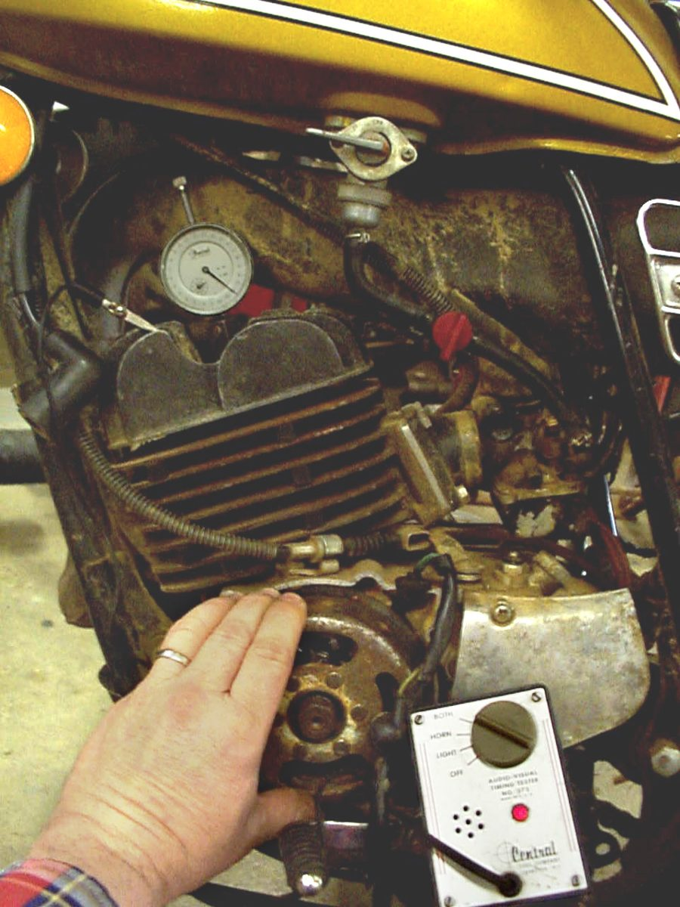
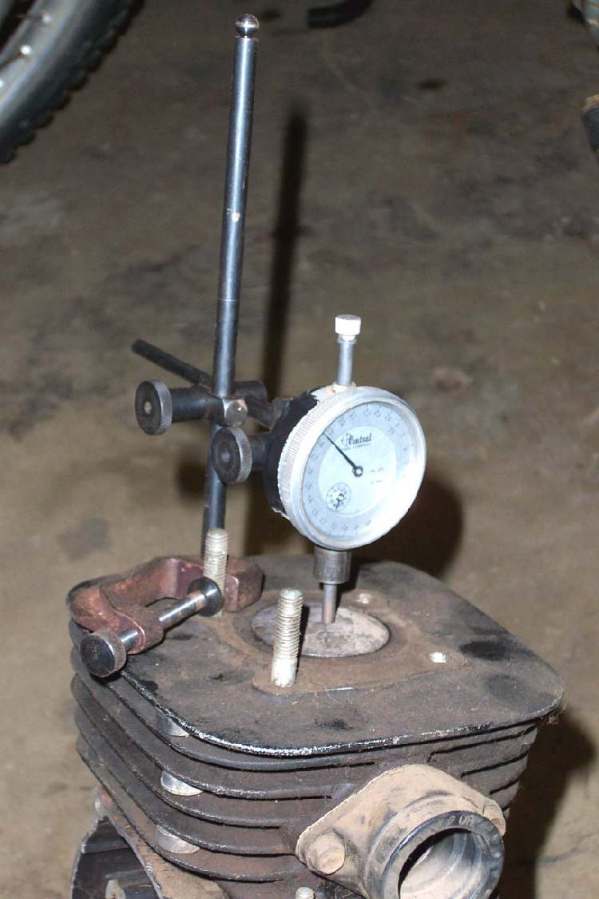
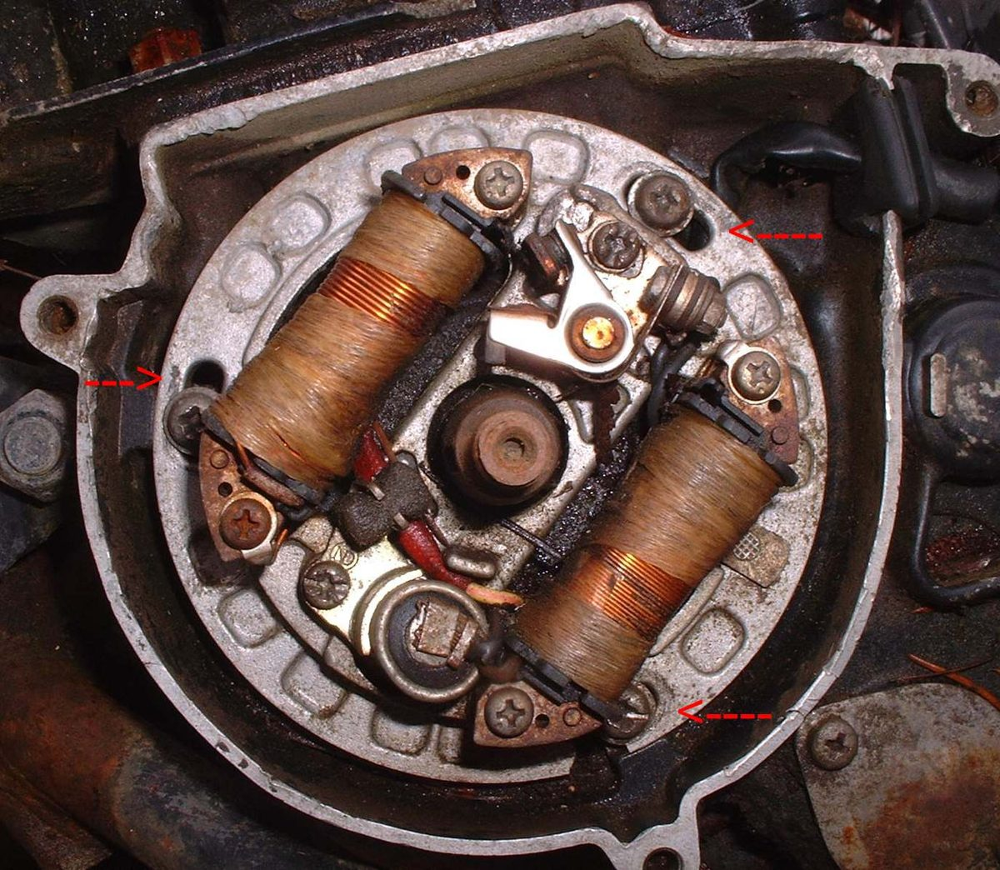

Many small bikes and mopeds run points under the flywheel and make their own power with a magnet on the flywheel and coils under it. There is no battery. The points open at the moment of spark. Because the points are under the flywheel, adjusting is slow work. Take care, because the spinning flywheel is heavy and the nut is under high load.
Safety
- Never hammer or lever a flywheel off. Use the correct puller. A gear puller or hammer can break the flywheel.
- Use a holding tool on the flywheel when loosening or tightening the nut. Tighten the nut to the value in the manual.
- The flywheel turns at thousands of rpm, close to the rider's legs. A loose nut is dangerous.
- Remove the spark plug to turn the engine by hand.
You need
- The manual: mark positions, direction of rotation, gap and whether to set at full retard or full advance.
- A way to sense the exact moment the points open: a buzzer, a meter on continuity, or a strip of cigarette paper gripped between the points.
Steps
- Remove the flywheel cover. Find the points and the wire that comes out of the crankcase to them. Check this in the manual.
- Connect the buzzer or meter to the points wire, with the other lead on earth. Or put a strip of thin paper between the closed points.
- Turn the engine in its rotation direction until the moving mark meets the fixed mark. The tone changes, or the paper comes loose, at the exact moment the points open.
- The marks must line up at that moment. Engines with a centrifugal advance are usually timed at the late (retarded) mark. Fixed-advance engines use the advance mark. Look up which in the manual.
- If the marks do not meet at that moment, change the points gap a little, or if the stator plate has slotted holes, move the plate. Tighten and check again, because tightening usually moves the setting.
- If a plate move is needed, it is made under the flywheel, so repeat: remove the flywheel, move, refit, check.
- After setting, measure the full gap at the widest opening. It must be in the manual's range. A gap outside the range can cause no spark.
- If the points are set right but there is no spark, the heel that rubs on the cam is probably worn. A new set is the cure. Points that look clean can still be worn at the heel.
- Lubricate: points grease on the cam, 1 drop of oil and a little grease on the felt.
- Clean the points with a strip of card in acetone. Any oil on the faces stops the spark.
- Refit the flywheel and tighten the nut to the manual's torque.
Check your work
- The engine starts and runs smoothly.
- If a timing light is possible, the mark appears in the right place at idle.
- Points faces are clean and dry.